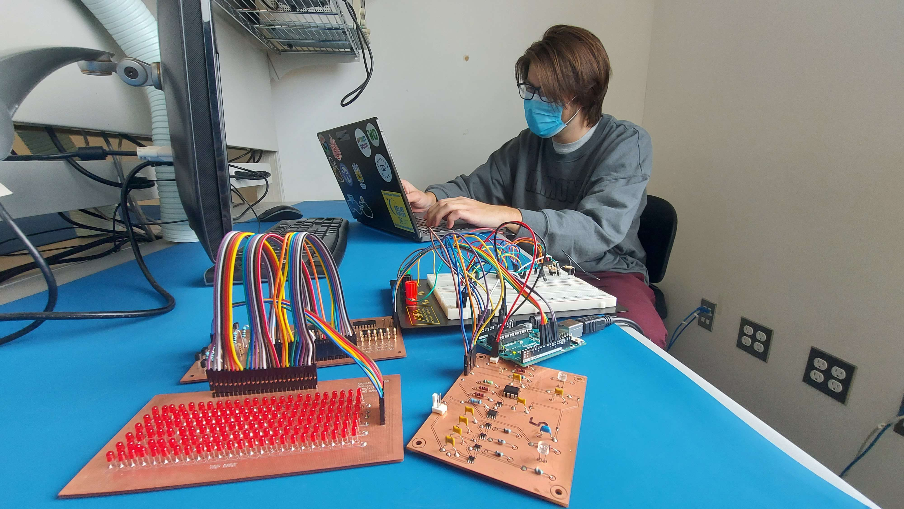
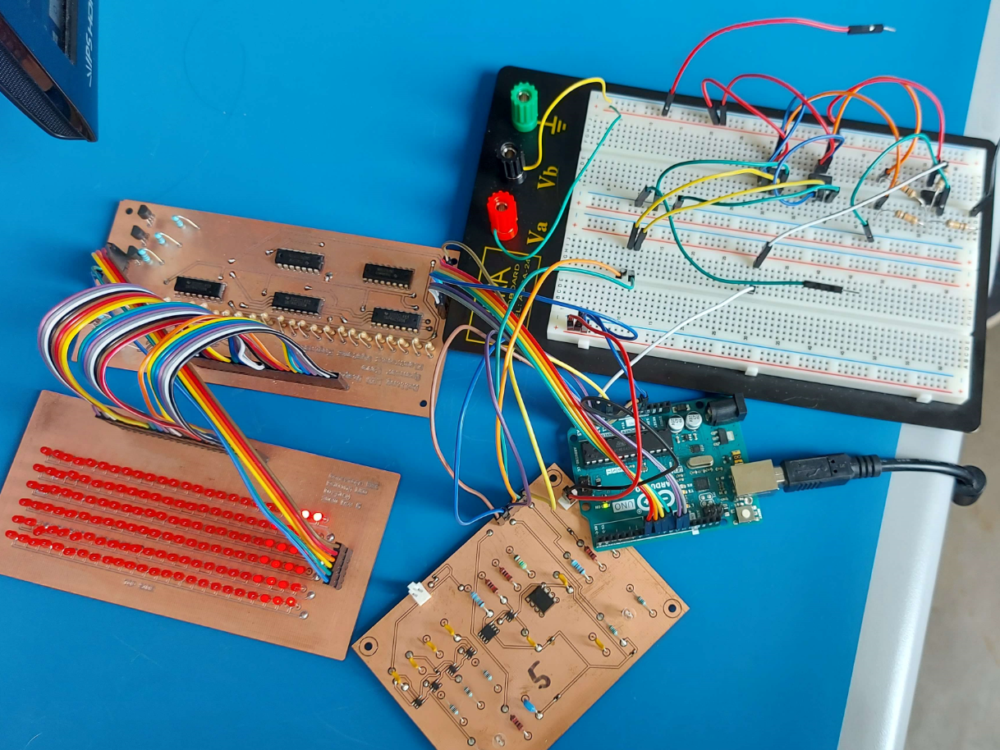
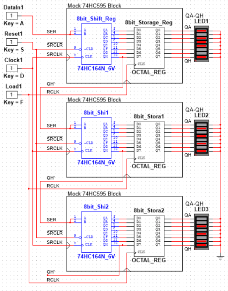
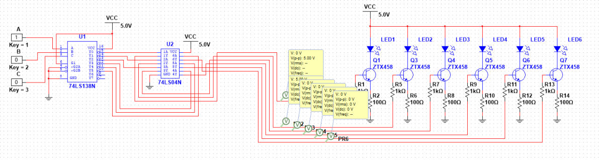
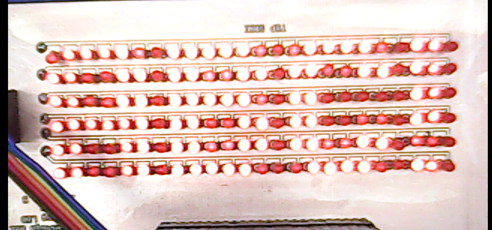
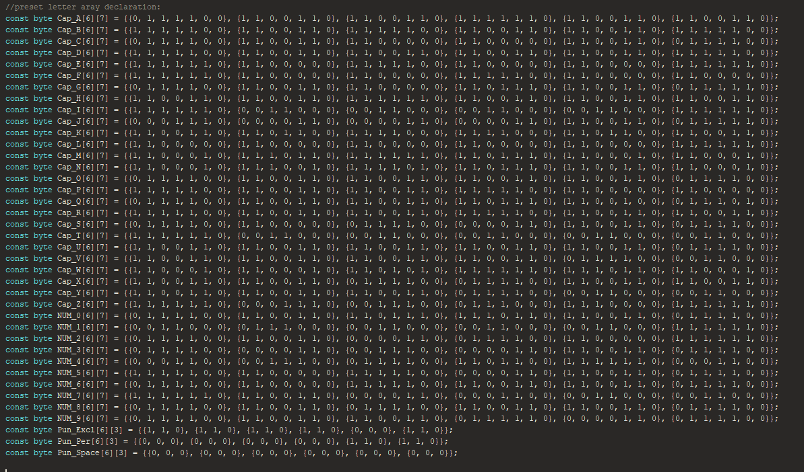
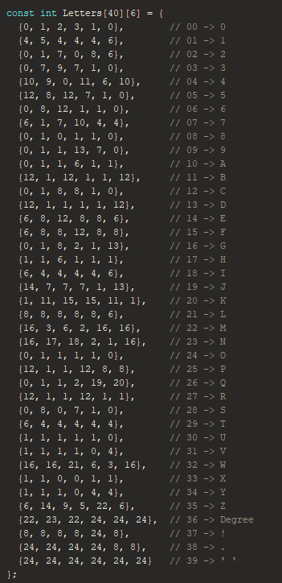
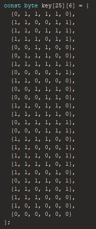

Semester Two Project: LED Display
The second project of my first year in the Electronic Systems Engineering program at Conestoga College was focused on designing and building a 6x24 LED matrix display driven by an Arduino Uno. The project involved creating a system capable of displaying scrolling text, reading environmental data, and dynamically controlling the output using integrated circuits and custom software. This project provided an opportunity to apply concepts of multiplexing, memory optimization, and sensor integration in a practical electronics application.
Project Overview
The primary goal of this project was to interface with a 6x24 LED matrix display using an Arduino Uno. writing software to render text and symbols, and integrating sensors to display real-time environmental data. the led display was designed to be controlled using a combination of shift registers and multiplexing techniques, allowing for efficient use of the Arduino's limited I/O pins. The system also integrated temperature and luminosity sensors, allowing temperature data to be displayed and the brightness to be adjusted based on ambient light conditions.

Hardware Design
The display uses a combination of shift registers, a demultiplexer, and an inverter to control rows and columns efficiently. This reduced the required Arduino pins from 30 to just 7. The display operates by scanning rows rapidly, creating the illusion of a fully lit matrix.


Column multiplexing circuit used for LED control

Row multiplexing circuit used for LED control

Example of display output showing characters and punctuation "ABC!"
Software Design
The software converts text into LED patterns using predefined character arrays and optimized storage structures. The matrix could be set to either display a static message or display the current temperature, which was read from a connected sensor. The software also included a brightness control feature that adjusted the display's brightness based on ambient light levels, read from a luminosity sensor. If the length of the text exceeded the display's width, the software implemented a scrolling mechanism to ensure all content was visible.
Engineering Challenges
Memory Limitations: The Arduino ran out of storage due to many character arrays. This was solved by compressing data into shared row patterns.

Original character arrays for each letter, which caused memory issues

Optimized character arrays using shared row patterns, which solved memory issues

Reference key system for mapping characters to display positions